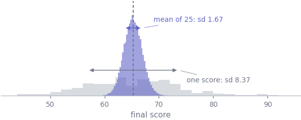
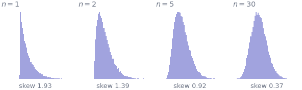
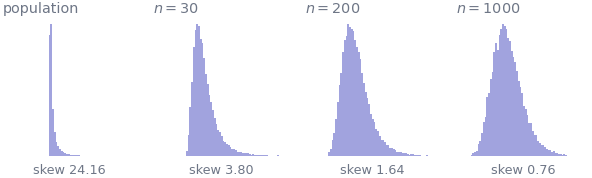

7. Sampling distributions and the CLT
Statistics · Unit 7
Why this unit is here
This is the hinge of the whole track. Everything before it describes data; everything after it makes claims about a population. The bridge between them is one idea: a statistic computed from a sample is itself a random variable, with a distribution of its own, and knowing that distribution is what lets you say how far your number might be from the truth.
The unit’s two results are the standard error, \(\sigma/\sqrt{n}\), and the central limit theorem, which says the sample mean becomes normally distributed almost whatever the population looks like. Together they are why a single study can say anything at all — and the limits of the second one are why some studies cannot.
7.1 Before you start
You should be able to:
- name a distribution from the mechanism that produced it — S6;
- state what a normal distribution’s 68–95–99.7 fractions mean — S6;
- use \(\operatorname{Var}(aX) = a^2\operatorname{Var}(X)\) and the fact that variances add — S5;
- tell a population parameter from a sample estimate — S1.
Quick check. A population has standard deviation 12. You take a sample of 9 and compute its mean. What is the standard deviation of that mean, over repeated samples?
TipShow the answer
\(\sigma/\sqrt{n} = 12/\sqrt{9} = 12/3 = 4\).
If you answered 12, you have given the spread of the observations, not of the mean. Distinguishing those two is what this unit is for, and everything from S8 onwards depends on it.
7.2 The idea
Take the cohort’s 238 usable final scores and treat them, for the length of this unit, as an entire population whose mean we happen to know. Now imagine drawing 25 of them at random and computing the mean. Then do it again. And again.
Each of those means is a number you could have reported. Collect them and you have a sampling distribution: the distribution of a statistic across all the samples you might have taken.
Two things about that picture are the content of the unit.
The sampling distribution is much narrower. Individual students are spread over 8.4 marks; the means of 25 students are spread over 1.67. Averaging cancels some of the noise, and the cancellation is exactly the variance arithmetic of S5.
It is centred in the same place. The sample mean is unbiased: over many samples it neither systematically overshoots nor undershoots. That is a property of the procedure, not a guarantee about any single sample.
7.3 The mechanics
The standard error
For a mean of \(n\) independent draws from a population with mean \(\mu\) and standard deviation \(\sigma\), S5 gave
\[ E[\bar{X}] = \mu, \qquad \text{sd}(\bar{X}) = \frac{\sigma}{\sqrt{n}} . \]
That second quantity has its own name — the standard error of the mean — and keeping it separate from \(\sigma\) is the single most important piece of vocabulary in the subject.
| describes | changes with more data | |
|---|---|---|
| standard deviation \(\sigma\) | how spread out the observations are | no |
| standard error \(\sigma/\sqrt{n}\) | how much the mean moves between samples | shrinks |
Collect more data and the observations stay exactly as spread out as they were — people do not become more alike because you measured more of them. What improves is your knowledge of where the centre is.
In practice \(\sigma\) is unknown, so the standard error is estimated by \(s/\sqrt{n}\) with the sample standard deviation of S2 in place of \(\sigma\). That substitution is not free, and paying for it is what the \(t\) distribution in S8 is for.
The central limit theorem
The standard error tells you the width of the sampling distribution. The central limit theorem tells you its shape.
If \(X_1, \dots, X_n\) are independent draws from any distribution with a finite mean \(\mu\) and a finite variance \(\sigma^2\), then as \(n\) grows the distribution of \(\bar{X}\) approaches a normal distribution with mean \(\mu\) and standard deviation \(\sigma/\sqrt{n}\).
Read what it does and does not say. It is a statement about the distribution of the mean, not about the data. Your observations remain exactly as skewed as they always were. And it requires finite variance — distributions with tails heavy enough to break that condition exist, and for them the theorem simply does not apply: \(\sigma/\sqrt{n}\) has nothing to describe, and no sample size makes the sample mean normal. (The mean itself may still settle down — a finite mean is enough for that — but its distribution never becomes the one the theorem promises.)
Here it is happening. The population below is exponential, which is about as lopsided as a common distribution gets.

“n is big enough” is not a number
Textbooks often say \(n = 30\) is enough. That is a rule of thumb calibrated on mildly skewed populations, and it is badly wrong for strongly skewed ones. How large \(n\) has to be depends on how far the population is from normal — and the worse the population, the larger the \(n\), with no upper bound.

The practical rule that replaces the number: look at your data’s skewness, and when in doubt use the bootstrap of S8, which does not assume a shape for the sampling distribution at all.
Two more assumptions worth naming
Independence. Everything here assumes the \(n\) draws are independent. If they are not, the correct variance of the mean carries covariance terms:
\[ \operatorname{Var}(\bar{X}) = \frac{1}{n^2}\Bigl(\textstyle\sum_i \operatorname{Var}(X_i) + 2\sum_{i<j}\operatorname{Cov}(X_i, X_j)\Bigr) . \]
The dependence you meet in practice — repeated measures, clustered data, a time series — is nearly always positive, so those terms add and the true standard error is larger than \(\sigma/\sqrt{n}\), often much larger, and every interval built on it is too narrow. Negative dependence works the other way and makes the mean more precise than the formula claims; the next paragraph is an example. This is the assumption most often violated in practice and least often mentioned.
Sampling with replacement, or a small fraction. Drawing without replacement from a finite population makes the draws slightly dependent. If your sample is under about 5% of the population the effect is negligible; if you have sampled half the population, the standard error is genuinely smaller than the formula says, and there is a finite-population correction for it.
7.4 Worked example
Watching the formula come true on the cohort.
Treat the 238 usable scores as the population, and take forty thousand samples at each of three sizes.
print(f"population: n = {population.size} mu = {mu:.4f} sigma = {sigma:.4f}")
print()
print(f"{'sample size':>12}{'mean of means':>16}{'sd of means':>14}"
f"{'sigma/sqrt(n)':>16}")
for n in [5, 25, 100]:
draws = rng.choice(population, size=(40_000, n))
sample_means = draws.mean(axis=1)
print(f"{n:>12}{sample_means.mean():>16.4f}{sample_means.std():>14.4f}"
f"{sigma / np.sqrt(n):>16.4f}")population: n = 238 mu = 65.2718 sigma = 8.3665
sample size mean of means sd of means sigma/sqrt(n)
5 65.2486 3.7609 3.7416
25 65.2700 1.6761 1.6733
100 65.2712 0.8422 0.8366Three things to take from that table.
The formula is exact, not approximate. \(\sigma/\sqrt{n}\) is the true standard deviation of the sample mean for any population with finite variance, at any \(n\). It is the shape that the central limit theorem makes approximate, never the width.
The means are unbiased at every sample size. Even at \(n = 5\), where a single sample is nearly useless, the average of many such means lands on \(\mu\). Unbiasedness and precision are separate properties, and a procedure can have the first without the second.
Quadrupling \(n\) halves the standard error. From 25 to 100 the spread falls from 1.67 to 0.84. That is the \(\sqrt{\;}\), and it is the arithmetic behind every complaint about how expensive precision is.
Now the shape. The cohort’s scores are only mildly skewed, so the mean should become normal quickly:
for n in [5, 25, 100]:
sample_means = rng.choice(population, size=(40_000, n)).mean(axis=1)
centre, spread = sample_means.mean(), sample_means.std()
inside = ((sample_means > centre - spread) & (sample_means < centre + spread)).mean()
print(f"n = {n:>3} skewness {stats.skew(sample_means):+.3f} "
f"within one sd {100*inside:.1f}% (normal: 68.3%)")n = 5 skewness +0.091 within one sd 68.3% (normal: 68.3%)
n = 25 skewness +0.034 within one sd 68.2% (normal: 68.3%)
n = 100 skewness +0.025 within one sd 68.2% (normal: 68.3%)Even at \(n = 5\) the sampling distribution is within a percentage point of the normal fractions, because the population it came from was already close to symmetric. The lognormal in the previous figure needed more than a thousand. The theorem is the same in both cases; what differs is how long it takes to arrive.
7.5 Try it yourself
Exercise 1 A population has \(\mu = 50\) and \(\sigma = 20\).
- What is the standard error of the mean of a sample of 25?
- How large a sample would you need for a standard error of 1?
- A colleague reports that with \(n = 400\) their sample standard deviation was
- Is that plausible?
TipShow the solution
\(20/\sqrt{25} = 20/5 = 4\).
Set \(20/\sqrt{n} = 1\), so \(\sqrt{n} = 20\) and \(n = 400\).
Almost certainly they have computed the standard error and called it the sample standard deviation. The sample standard deviation estimates \(\sigma = 20\) and does not shrink with \(n\); the standard error at \(n = 400\) is exactly \(20/20 = 1\), and 2 is much closer to that than to 20.
Strictly, a sample standard deviation of 2 is not impossible. A population whose \(\sigma\) comes almost entirely from very rare enormous values can have \(\sigma = 20\) while a typical sample of 400 — containing none of them — looks far tighter. Nothing in the question suggests such a population, and the mix-up is the far likelier explanation, but it is worth knowing that the sample standard deviation is itself an estimate with a distribution.
Exercise 2 Someone measures 40 patients, taking 5 blood-pressure readings from each, and computes a standard error as \(s/\sqrt{200}\).
- What has gone wrong?
- Is the reported standard error too large or too small?
- What should they do instead?
TipShow the solution
The 200 readings are not 200 independent draws. Five readings from one patient are related to each other; the independent unit is the patient, and there are 40 of them.
Too small. The formula credits them with 200 independent pieces of information when they have closer to 40. How much closer depends on how strongly readings within a patient agree: if they agreed perfectly, 200 readings would carry exactly as much information as 40.
Reduce each patient to a single number — their mean of five readings — and compute the standard error from those 40 values. That is the simplest correct analysis. (More sophisticated methods use all 200 readings and model the within-patient correlation explicitly, which recovers a little more precision; they never recover the factor of \(\sqrt{5}\) the naive calculation claimed.)
Exercise 3 Household income is strongly right-skewed. A survey of 50 households reports a mean income and a symmetric interval around it.
- Which assumption is under strain?
- Which direction would you expect the error to go?
- Name two things you could do about it.
TipShow the solution
Not the standard error — \(\sigma/\sqrt{n}\) holds regardless of shape. The strained assumption is the central limit theorem’s approximation at \(n = 50\): with a strongly skewed population the sampling distribution of the mean is still lopsided at that size, so a symmetric interval does not match it.
Coverage falls below the stated 95%, and the misses are nearly all of one kind. Simulating a strongly right-skewed population at \(n = 50\), the usual \(t\) interval contains the true mean about 90% of the time, and in almost every failure the whole interval sits below it.
The mechanism is worth following. Most samples from a right-skewed population miss its rare large values, so their mean comes out too low — and because those same large values are what inflate the standard deviation, such a sample also has a small \(s\) and therefore a narrow interval. Too low and too narrow is exactly the combination that misses. The occasional sample that does catch a large value gets a high mean and a wide interval, and usually still covers.
Use the bootstrap (S8), which builds the sampling distribution empirically and produces an asymmetric interval if that is what the data imply. Or change the estimand: report the median income, which is what people usually meant anyway and is far less affected by the tail. Transforming to logs is a third option, but note it changes what you are estimating — the mean of the logs is not the log of the mean.
7.6 Check it in Python
The standard error formula is exact, so it should hold for a population of any shape at all. Check it on three:
populations = {
"cohort scores": population,
"exponential": rng.exponential(3.0, 200_000),
"coin flips": rng.integers(0, 2, 200_000).astype(float),
}
n = 40
for name, pop in populations.items():
sample_means = rng.choice(pop, size=(30_000, n)).mean(axis=1)
print(f"{name:<15} sigma {pop.std():7.4f} observed sd of mean "
f"{sample_means.std():7.4f} sigma/sqrt(n) {pop.std()/np.sqrt(n):7.4f}")cohort scores sigma 8.3665 observed sd of mean 1.3231 sigma/sqrt(n) 1.3229
exponential sigma 2.9754 observed sd of mean 0.4720 sigma/sqrt(n) 0.4705
coin flips sigma 0.5000 observed sd of mean 0.0796 sigma/sqrt(n) 0.0791Three completely different populations — one roughly bell-shaped, one strongly skewed, one taking only the values 0 and 1 — and the width formula is right in all three.
The shape is a different matter, and this is where the rule of thumb fails. Assert that a sample of 30 makes the mean approximately normal, and watch it fail on a population skewed enough to matter:
heavy = rng.lognormal(0.0, 1.6, 300_000)
means_of_30 = rng.choice(heavy, size=(40_000, 30)).mean(axis=1)
skewness = stats.skew(means_of_30)
assert abs(skewness) < 0.5, (
f"n = 30 was supposed to be enough, but the sample mean still has "
f"skewness {skewness:.2f} (a normal distribution has 0)"
)--------------------------------------------------------------------------- AssertionError Traceback (most recent call last) Cell In[7], line 4 2 means_of_30 = rng.choice(heavy, size=(40_000, 30)).mean(axis=1) 3 skewness = stats.skew(means_of_30) ----> 4 assert abs(skewness) < 0.5, ( 5 f"n = 30 was supposed to be enough, but the sample mean still has " 6 f"skewness {skewness:.2f} (a normal distribution has 0)" 7 ) AssertionError: n = 30 was supposed to be enough, but the sample mean still has skewness 4.22 (a normal distribution has 0)
The same check on the cohort’s scores passes comfortably at \(n = 5\):
mild = rng.choice(population, size=(40_000, 5)).mean(axis=1)
print(f"cohort scores, n = 5: skewness of the sample mean {stats.skew(mild):+.3f}")
assert abs(stats.skew(mild)) < 0.5cohort scores, n = 5: skewness of the sample mean +0.110The difference is not the sample size. It is the population, and the only way to know which case you are in is to look at your data before choosing a method.
Finally, independence. Here is the same \(n\) with the draws deliberately made dependent — each sample is one student repeated:
n = 25
independent = rng.choice(population, size=(20_000, n)).mean(axis=1)
repeated = np.repeat(rng.choice(population, size=(20_000, 1)), n, axis=1).mean(axis=1)
print(f"25 independent students : sd of mean {independent.std():.4f}"
f" formula {sigma/np.sqrt(n):.4f}")
print(f"one student, 25 times : sd of mean {repeated.std():.4f}"
f" formula still claims {sigma/np.sqrt(n):.4f}")25 independent students : sd of mean 1.6766 formula 1.6733
one student, 25 times : sd of mean 8.3366 formula still claims 1.6733The second case is an extreme, but the direction is the one you should expect: positively dependent observations make the true standard error larger than the formula, and the formula gives no warning at all.
7.7 Common wrong turns
Where this usually goes wrong
- Confusing the standard deviation with the standard error
- \(s\) describes the observations and does not shrink as you collect more. \(s/\sqrt{n}\) describes the mean and does. Reporting one where the other was meant is the commonest numerical error in student work, and it is a factor of \(\sqrt{n}\).
- Thinking the CLT makes your data normal
- It makes the sample mean approximately normal. The observations keep whatever shape they had, and a normal model applied to them is as wrong after the theorem as before it.
- Trusting \(n = 30\)
- It is a rule of thumb for mildly skewed populations. For income, insurance claims, or anything with a long tail, thirty is nowhere near enough, and there is no sample size that works for every population.
- Using \(\sigma/\sqrt{n}\) on dependent observations
- Repeated measures, clustered samples and time series all break the assumption, and because their dependence is positive they all make the true error larger. Reduce to one number per independent unit, or use a method that models the dependence. (Negative dependence — sampling a large fraction of a finite population without replacement — makes the formula conservative instead.)
- Reading unbiasedness as accuracy
- The sample mean is unbiased at \(n = 5\), which sounds reassuring and means only that it is right on average across many studies. Your one study can still be a long way out. Unbiased and precise are separate virtues.
- Forgetting the theorem needs a finite variance
- Some distributions have tails so heavy that the variance does not exist. The sample mean may still converge to the population mean, but \(\sigma/\sqrt{n}\) does not exist to describe how fast, and the normal approximation never arrives. They are rare in teaching examples and not rare in finance.
7.8 Check yourself
Answers are at the foot of the page. Give a reason as well as an answer.
A population has \(\sigma = 30\). You increase your sample from 100 to 900. What happens to \(s\) and to the standard error?
- Both fall by a factor of 3
- \(s\) stays about 30; the standard error falls from 3 to 1
- \(s\) falls from 3 to 1; the standard error stays about 30
- Both stay the same
- The cohort’s scores are mildly skewed and the sample mean is nearly normal by \(n = 5\). Household income is strongly skewed and the sample mean is still skewed at \(n = 1000\). Do these two facts contradict the central limit theorem?
- Is the formula \(\text{sd}(\bar{X}) = \sigma/\sqrt{n}\) an approximation?
- You have measured 60% of a small population. Is your standard error \(s/\sqrt{n}\)?
- A study of 2,000 people reports a mean with a very narrow standard error. The 2,000 were recruited through one social-media post. What does the standard error tell you about how close the estimate is to the population mean?
TipShow the answers
(b). The sample standard deviation estimates \(\sigma\), which is a property of the population and does not change: it stays near 30. The standard error is \(30/\sqrt{n}\), falling from \(30/10 = 3\) to \(30/30 = 1\). Option (c) swaps the two, which is exactly the confusion the question is testing.
No. The theorem is a statement about a limit: the sampling distribution approaches normality as \(n \to \infty\). It says nothing about how fast, and the rate depends on the population. Both observations are the theorem behaving exactly as stated.
No. It is exact for any population with a finite variance and any \(n\), given independent draws. The approximation in this unit is the shape — the claim that the sampling distribution is normal — not the width.
No. Drawing 60% of a finite population without replacement makes the draws dependent, and in this direction it helps: the true standard error is smaller than \(s/\sqrt{n}\), by a factor of roughly \(\sqrt{1 - 0.6} = 0.63\). In the limit where you sample everybody there is no sampling error at all, because there is no sampling left.
Almost nothing. The standard error measures how much the estimate would bounce around between repeated samples drawn the same way — and every one of those samples would be recruited through the same social-media post, with the same people systematically missing. A narrow standard error around a biased estimate is a precise answer to the wrong question, which is S1’s lesson arriving with a number attached.